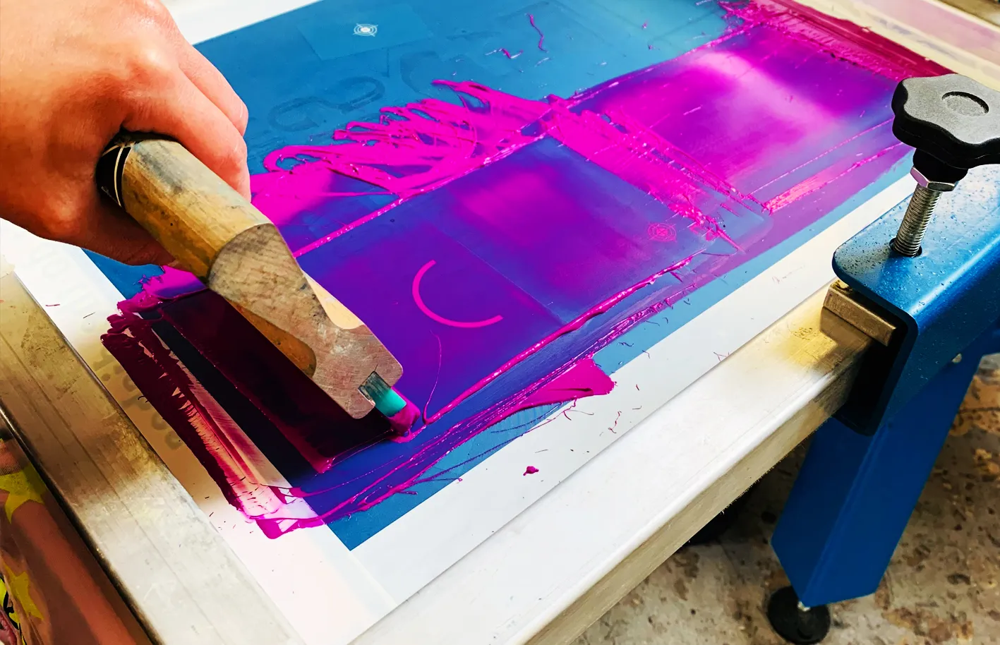

What is Screen Printing?
By Brad Hyman
November 17th, 2025

Screen printing is a printing technique where a mesh is used to transfer ink (or dye) onto a substrate, except in areas made impermeable to the ink by a blocking stencil. A blade or squeegee is moved across the screen in a "flood stroke" to fill the open mesh apertures with ink, and a reverse stroke then causes the screen to touch the substrate momentarily along a line of contact. This causes the ink to wet the substrate and be pulled out of the mesh apertures as the screen springs back after the blade has passed. One colour is printed at a time, so several screens can be used to produce a multi-coloured image or design.
Traditionally, silk was used in the process. Currently, synthetic threads are commonly used. The most popular mesh in general use is made of polyester. There are special-use mesh materials of nylon and stainless steel available to the screen-printer. There are also .
Screen printing is a versatile technique used to create durable and vibrant designs on various materials. Here are some of the key techniques and methods used in screen printing: